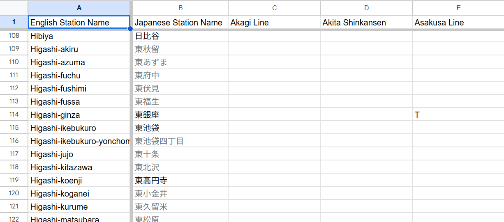
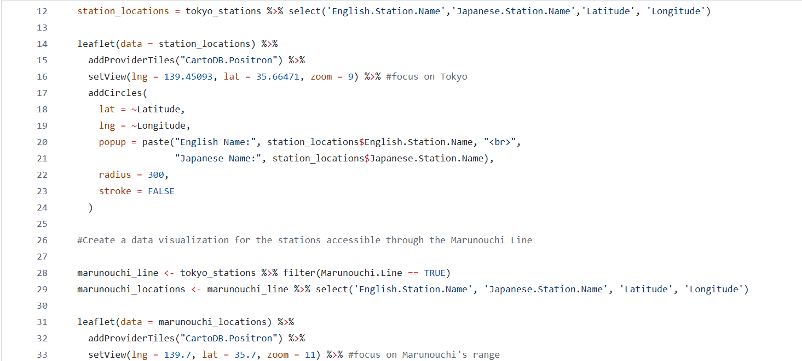

Tokyo Trains
Long before I started my data analysis class, I was already looking for a list of every station in Tokyo. But no matter how hard I searched, I wasn't able to find a comprehensive one. My goal was to try and visit every station in Tokyo and it seemed to me that this list should exist somewhere that I could easily find. After looking into it more, I realized that there was a reason that this was not the case. Tokyo's public transportation system is run by several private companies. Each of these companies only provides information about their own railways. Using this information, I made my own dataset of every station in Tokyo prefecture. This dataset includes 105 features (columns) and 632 observations (rows). The columns include every station's English name, Japanese name, the train lines that run through it, the latitude, and the longitude. Each row is a different station. The relationship between the stations and lines that run through them is shown with a T for TRUE if the line runs through the station and a NULL value if it does not.
After finishing the dataset, I downloaded the Google Sheet as a CSV file and loaded it into R. Using the dplyr package, I selected the English Station, Japanese Name, Japanese Station Name, Latitutde, and Longitude columns from the dataset. I then loaded the Leaflet package to make the map of Tokyo prefecture shown at the top of this page. On this map, every blue dot represents a station. I made the map interactive, so that you could see the English and Japanese names of the station when you clicked on a blue dot.
After creating the map, I used the dplyr function to make several other visualizations, one of which is shown on the left. In this visualization, I filtered stations so that only ones on the Marunouchi Line were visible. In another, I showed the Seibu-Seibuen line which only connects two stations. I used these visualizations to tell a story about the privatization of trains in Japan and how this influences both urban development and tourism in Tokyo. To read more about this analysis, see more visualizations, or learn more about public transportation in Japan, please click the button to Medium below.